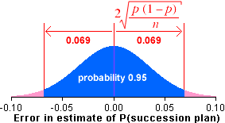

= 0.510 ± 0.069
= 0.510 ± 0.069
Companies with management succession plans
p = 107/210 = 0.510 had management succession plans

 = 0.510 ± 0.069
= 0.510 ± 0.069
This diagram uses 95% bounds on the error distribution (or at least the normal approximation to it) to find the 95% CI for the population proportion.
In a sample of 210 chief executives of fast-growing small companies, 107 had plans to deal with the consequences of executives resigning.